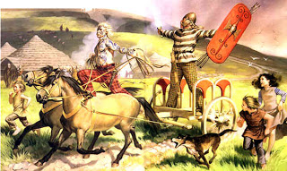

In the year of the famine, When starvation and Black Death raged across the land, There were many driven by the Hunger To set sail for the Americas;
In search of a new life, and a new hope -- Oh, but there were some that couldn't cope; And they spent their lives in search of Fool's Gold.
Philip Parris Lynott, of blessed memory.
Go dtuga Dia suaimhneas da anam*
As they staggered from the ships that had carried them across the Atlantic, many of the Irishmen driven to America by the Famine were immediately accosted by recruiters trolling for warm bodies to fill federal uniforms.


The "Irish Achilles": Legendary warrior Cu Chulain, also known as the "Hound of Ulster."The native pugnacity of the Celts is legendary (it's been said that all Irish ballads are about some combination of fighting, drinking, and dying), and more than a few of the Patriot heroes of our War for Independence were sons of Eire. So there was little reason to doubt that Irish recruits would acquit themselves well on the battlefield, assuming that they were well trained and motivated by a worthy cause.
Neither of those conditions was met in Washington's war on Mexico, a vulgar exercise in naked imperial greed that provoked Henry David Thoreau's immortal tax protest and prompted a defiant campaign against the conflict by a freshman Whig Congressman from Illinois. That Whig, a chap named Lincoln, would be denied a second term when his own party refused to re-nominate him -- and he would ultimately have a rather dramatic change of heart regarding the morality of aggressive war.
The Irish who enlisted in the US Army offered their blood on behalf of a country they had not yet come to know, and a government that had done nothing to earn their allegiance. Most of them were simply desperate for work of any kind, and the soldier's wage of $7 a month was sufficient to keep their loved ones from succumbing to hunger, a predator with which they were quite familiar.
Then, as now, the Jingo press was indecently eager to shed foreign blood, but didn't know quite what to make of the un-assimilated foreigners flooding into the army. Historian Anne-Marie O'Connor recalls: "The US anti-immigrant press of the time caricatured the Irish with simian features, portraying them as unintelligent and drunk and charging that they were seditiously loyal to the Pope."
Attitudes of that sort coalesced within the Army as well. Irish recruits often found themselves on the receiving end of various kinds of abuse. In anticipation of the conflict with Mexico, most of the Irish were quickly southbound to the border, and it was common for those who attended Mass to be accused of "consorting with the enemy" -- since the Catholic Irish were seen as having a natural affinity with the Catholic Mexicans.
After President Polk and General Taylor succeeded in provoking the war, many of the Irish recruits were outraged by the cruelties inflicted on priests and nuns. General Taylor blithely admitted on one occasion that "there is scarcely a form of crime that has not been reported to me as committed by them [the troops under his command]."
US Troops lay siege to Monterrey.

Those atrocities, coupled with the commonplace bigotry and injustice they experienced, had the effect of watering down the allegiance of the Irish troops -- and that allegiance was already a pretty thin broth.
These men had seen their homeland ravaged by a catastrophe created, in large measure, through British mercantilism. As Mark Thornton of the Mises Institute points out, those who fled the Potato Famine were the victims of "conquest, theft, bondage, protectionism, government welfare, public works, and inflation." Those beguiled into enlisting found themselves being used as cannon fodder in a war against people for whom they bore no natural grudge, and with whom they had much in common.
Nothing but Fool's Gold could be found at the end of that particular rainbow. Accordingly, many of the Irish recruits sloughed off their supposed obligations to the US government and chose to enlist instead with the Mexicans who were fighting on their own soil against an invading foreign army.
The banner of the "San Patricios" Battalion -- Irish expatriates who fought on behalf of Mexico against the invading US Army.

Was this desertion, or treason? No: It was a species of secession. Neither honor nor morality dictated that Irishmen should take up arms against Mexicans on behalf of Washington, D.C. Accordingly, hundreds of Irishmen simply repaired to a banner -- a shamrock green flag (hand-embroidered by the nuns of San Luis Potosi) bearing a Celtic harp and the legend Erin go bragh (Ireland Forever) and a cause -- the defense of their fellow Catholics -- that actually commanded their loyalty.
The most notable of the "Red Guards" -- as they were called by the Mexicans because of the red hair and sunburned complexions that typified the displaced Irishmen -- was John Riley of Galway, who could have been called a "premature Wetback-in-reverse": Denied the opportunity to attend Mass, Riley swam across the Rio Grande to Mexico, fleeing Washington's jurisdiction in search of religious freedom. Other Irish refugees followed him, and Riley was eventually appointed captain of the 200-member "San Patricios" Battalion (taken from the Spanish name for St. Patrick), which would go on to fight five major engagements against the US Army.
Ah, but this is an Irish story, so you know it must have ended badly.
The August 1847 battle at Churubusco -- appropriately, a town named for an Aztec war god -- was the bloodiest engagement of the war. The San Patricios fought with doomed courage, losing more than half their number in combat with nearly all the rest falling into the hands of the enemy -- their former employer, the US Army.
Drumhead military tribunals quickly sentenced most of the San Patricios to hang as "deserters." John Riley -- by that time a Brevet Major -- was one of the few spared the noose, receiving instead fifty lashes of the whip and being branded with a two-inch letter "D." This was an ironically suitable punishment, inflicted as it was by an Army serving the political interests of the chattel slave lobby.
[As the first commenter below observes, we shouldn't forget that the Mexican government of the time, whose handiwork was visible at Goliad and the Alamo, was a foul and brutal outfit as well.]

The San Patricios are almost entirely unknown on this side of the Rio Grande (an earnest but indifferently produced 1999 film about them did nothing to rescue their story from undeserved obscurity). The Mexican government, a regime nearly as filthy and despicable as the one ruling us, periodically commemorates the San Patricios, trying to poach the credit for the courage and honor those men displayed on the battlefield.
There were American soldiers -- Robert E. Lee, to cite the most obvious example -- who distinguished themselves for valor and leadership on behalf of an ignoble cause. But the only US soldiers who actually fought for freedom in that entire conflict were the supposedly treasonous Irishmen who shed that uniform and took up arms against Washington's invasion of Mexico.
As someone of Mexican-Irish ancestry (I've occasionally advised people, "Don't make me angry, and don't get me drunk"**), I've long wondered about the natural affinity between people of those two very different countries. Catholicism obviously provides a strong bond, as does the fact that both Mexicans and Irish, from my experience and observations, seem to be prone to a fatalistic outlook on life.
What I find truly inspiring about the San Patricios, however, is the fact that those long-suffering men didn't simply surrender to the inevitable. Survivors of a famine and plague engineered by the Empire that occupied and mis-managed their homeland, disillusioned soldiers of a government that was becoming as rapacious as the one they had fled, they still had enough fight in them to do battle on behalf of what they honestly believed to be right in spite of prohibitive odds and the the long drop to the end of a rope that awaited them if they lost.
Chances are that we'll need more than a little of that indomitable pugnacity ourselves, pretty soon.
Obiter Dicta
Yes, this was supposed to be my St. Patrick's Day installment, but I was too busy panicking yesterday to publish it.
If you haven't done so already, I urge you to read Tom Eddlem's account of his experience as a federal juror -- that is, a "wrinkle" to be ironed out in the cause of "justice," as some tax-fed and promotion-hungry prosecutors pretend to understand it. Tom's piece is exquisitely written and terrifically thought-provoking. After you've read it you'll begin to understand why I consider it to be a blessing to have Tom as a professional associate, and an honor to have him as a friend.
 On sale now!
On sale now!Dum spiro, pugno!
_______
*"May God grant peace to his soul," in approximate translation.
** The former is good advice, the latter gratuitous, since I'm a teetotaler.
14 comments:
WNG, what you're leaving out - Mexico was hardly noble in the conflict either, considering just a few years earlier attempted to crush the secession of the Republic of Texas. A case could be made that the US was justified in defending itself over the Texas annexation, but not a flat out invasion of Mexico.
In modern revisionist tellings of this war these are too-often left out. I know you mean well though.
Daniel, you're entirely correct, and the brutality of the Mexican "republic" of that time helps explain my loathing for that government today. That's something I expressed, albeit in passing, in the essay.
And the fact that Riley and his fellows (who were animated by commendable motives) weren't much better off fighting for the Mexican side, given the duplicity and depravity of that government, is one reason why I chose the title. :-)
I was taught Texas history in Texas public schools, visited the Alamo, San Jacinto, Washington-on-the-Brazos, Goliad, etc. But today is the first time I ever heard of the Batallón San Patricio.
In my first visit to México (also my first time outside the U.S.), I was really surprised by this very different neighboring culture, about which I knew NOTHING. It was the first clue I had that there may have been some deficiencies in my education. I was also surprised by how friendly people were, despite the bloody history of the past century.
A bit off subject, but in Thomas Moore's historical fictional novel "The Hunt for Confederate Gold" (Fusilier Books, 2005), an Irish Confederate soldier (whose loyalty is unfairly doubted) plays a key role in helping a small band of soldiers escape from Virginia through Union lines with a chest of the legendary Confederate gold, to bury it secretly in South Carolina. The story is picked up again in the present day, when the gold is unearthed (thanks to a code based on the King James Bible) in a desperate race against federal agents, and used to restore freedom and sound currency. It's a book that Will and many of his readers here might enjoy.
Of course, the ultimate Irish-American fictional character was Gerald O'Hara. ;-)
This sad story was, of course, played out again a decade and a half later, on an even larger scale, when the next generation of immigrants from the Emerald Isle found themselves tricked or coerced into joining Uncle Abe's genocidal imperial campaign against the Southern States. Equally sad were the many instances (Fredericksburg by no means an isolated incident) in which Irishmen in both armies found themselves on opposite sides of the battlefield, mowing each other down in cold blood, for no sane or justifiable reason.
One wonders if the current hordes of foreign-born "volunteers" serving in Uncle Sam's current imperial legions will find themselves in similar situations as the Empire slowly collapses and fragments.
I faced, and was excluded by, the same screening process when I was summoned for jury duty in the State of Oregon. I later got the transcript, and posted it online. They are carefully trained in jury tampering, to exclude anyone who will not rubber-stamp the judicial opinion.
If the U.S. goes into a depression, I believe it may come to fighting for our freedom against whatever evil controls Washington, just like the Irish. We know how they behaved in the first depression. We know they now have the hardware and software installed for martial law, camps, national "service" and all the rest. I'm almost bound to obey the government in all circumstances. However, kidnapping kids in a draft, submitting to death squads, or relocation to a state camp is where the line is drawn. True, fighting back is unlikely to make things better. But how shameful to sit back and do nothing when the only alternative is to be murdered.
Do we exist only to serve an economic system (?)
In his comment above, Keith doesn't mention FIJA (Fully Informed Jury Association), although he is fine exponent of FIJA's principles.
http://www.fija.org/
My wife was facing possible jury duty this week. I directed her to FIJA, but added, "Don't say a word about FIJA or jury nullification, unless you want to be excused for cause -- GUARANTEED."
Keith's transcript proves the accuracy of that prediction. "Jury tampering" -- that's calling a spade a spade, for sure.
Dear Mr. Grigg, I almost always enjoy all your posts, and this one was no exception, but I couldn't help but balk when reading this:
"There were American soldiers -- Robert E. Lee, to cite the most obvious example -- who distinguished themselves for valor and leadership on behalf of an ignoble cause."
If you believe that the South was fighting to keep slavery intact, you're right: Lee was fighting for an ignoble cause. That's not what Lee was fighting for.
I'm not going to go into why Lincoln's army decided to attack the South. As intelligent and as well-read as you are, you have no excuse to be ignorant of the real reasons.
As it is, the North wasn't fighting to "free the slaves." Lincoln sent troops to the South to make sure everyone labored under the same Master.
I was born and raised a Connecticut Yankee. I once believed the fairy tale of Honest Abe and his "war to free the slaves." Then I wised up, studied up, and discovered the truth of the matter.
Please tell me you'll do the same.
-Sans Authoritas
Sans Authoritas, my point -- which I made poorly -- was not that the Confederates were uniformly fighting to preserve slavery, but that the chattel slave lobby was an unambiguous beneficiary of the war with Mexico.
The North's war of aggression against the South had almost nothing to do with emancipating anybody, black, white, or of any other shade. Lincoln "un-emancipated" slaves within his jurisdiction (reversing Fremont's emancipation order in Missouri, for instance); the two US presidents who succeeded Lincoln were both slave owners. And the impact of Lincoln's war has been to make everybody within the involuntary Union a serf. So much for the "Great Emancipator"....
Ah, I see now. You were discussing Lee's role in the Mexican-American war, not comparing it to the self-defense of the South during the War of Northern Aggression.
While I understand where you are coming from, even in this case, I must disagree. There is no way to be honorable, noble or full of valor while prosecuting an unjust war. The only way to remain noble is not to participate at all. This latter, as you wrote, was the chosen course of the Irish.
There is nothing honorable in tipping one's hat while taking someone else's money or land at gunpoint.
One can't be "good" or "noble" while prosecuting the unjust war. In such a case, one's actions can only be less evil.
-Sans Authoritas
As a Southerner of Scotch-Irish descent, and one of several generations of career soldiers, I have always taken some pride in the fact that Southerners, particularly of Scotch-Irish descent, have accounted for so many of the awards for valor through out many wars. It is a sad pride, however, as I lament that our bravery in battle was matched with the wisdom to ally ourselves with noble causes, and more importantly a biblical response to war. Far better that we realize that our greatest hero was Saint Patrick and his wisdom in refusing to fight secular enemies with secular weapons, but, instead, took up spiritual weapons to fight spiritual forces in high places.
"There is no way to be honorable, noble or full of valor while prosecuting an unjust war."
Sans Authoritas should read this: George W. Bush Hates America
Read about Hanns-Joachim Scharff.
I am familiar with Scharff. His effective intelligence gathering techniques were being used to prolong the unjust aggression of the Third Reich. His end was execrable, no matter what his means may have been.
-Sans Authoritas
Post a Comment